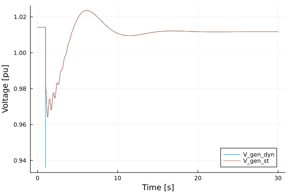
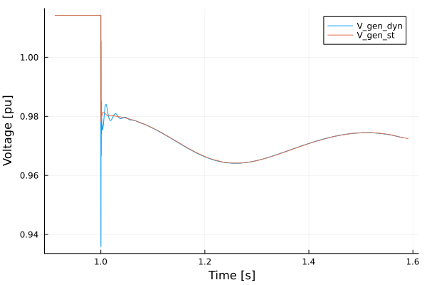

Line Modeling Simulations
To follow along, you can download this tutorial as a Julia script (.jl) or Jupyter notebook (.ipynb).
Introduction
This tutorial will introduce an example of considering dynamic lines in PowerSimulationsDynamics.
This tutorial presents a simulation of a three-bus system, with an infinite bus (represented as a voltage source behind an impedance) at bus 1, a one d- one q- machine on bus 2 and an inverter of 19 states, as a virtual synchronous machine at bus 3. The perturbation will be the trip of two of the three circuits (triplicating its resistance and impedance) of the line that connects bus 1 and bus 3. This case also consider a dynamic line model for connection between buses 2 and 3. We will compare it against a system without dynamic lines.
It is recommended to check the OMIB tutorial first, since that includes more details and explanations on all definitions and functions.
Step 1: Package Initialization
using PowerSimulationsDynamics
using PowerSystems
using PowerNetworkMatrices
using PowerSystemCaseBuilder
using Sundials
using PlotsPowerSystemCaseBuilder.jl is a helper library that makes it easier to reproduce examples in the documentation and tutorials. Normally you would pass your local files to create the system data instead of calling the function PowerSystemCaseBuilder.build_system.
Step 2: Data creation
Load the system using PowerSystemCaseBuilder.jl:
threebus_sys = build_system(PSIDSystems, "Three Bus Dynamic data Example System")| System | |
| Property | Value |
|---|---|
| Name | |
| Description | |
| System Units Base | SYSTEM_BASE |
| Base Power | 100.0 |
| Base Frequency | 60.0 |
| Num Components | 19 |
| Static Components | |
| Type | Count |
|---|---|
| ACBus | 3 |
| Arc | 3 |
| Area | 1 |
| Line | 3 |
| LoadZone | 1 |
| Source | 1 |
| StandardLoad | 3 |
| ThermalStandard | 2 |
| Dynamic Components | |
| Type | Count |
|---|---|
| DynamicGenerator{OneDOneQMachine, SingleMass, AVRTypeI, TGFixed, PSSFixed} | 1 |
| DynamicInverter{AverageConverter, OuterControl, VoltageModeControl, FixedDCSource, KauraPLL, LCLFilter, Nothing} | 1 |
In addition, we will create a new copy of the system on which we will simulate the same case, but will consider dynamic lines:
threebus_sys_dyn = deepcopy(threebus_sys);Step 3: Create the fault and simulation on the Static Lines system
First, we construct the perturbation, by properly computing the new Ybus on the system:
#Make a copy of the original system
sys2 = deepcopy(threebus_sys)
#Triplicates the impedance of the line named "BUS 1-BUS 3-i_1"
fault_branches = get_components(ACBranch, sys2)
for br in fault_branches
if get_name(br) == "BUS 1-BUS 3-i_1"
br.r = 3 * br.r
br.x = 3 * br.x
b_new = (from = br.b.from / 3, to = br.b.to / 3)
br.b = b_new
end
end
#Obtain the new Ybus
Ybus_fault = Ybus(sys2).data
#Define Fault: Change of YBus
Ybus_change = NetworkSwitch(
1.0, #change at t = 1.0
Ybus_fault, #New YBus
);[ Info: Finding subnetworks via iterative union find
[ Info: Finding subnetworks via iterative union findNow, we construct the simulation:
#Time span of our simulation
tspan = (0.0, 30.0)
#Define [`Simulation`](@ref)
sim = Simulation(
ResidualModel, #Type of model used
threebus_sys, #system
pwd(), #folder to output results
tspan, #time span
Ybus_change, #Type of perturbation
)| Simulation Summary | |
| Property | Value |
|---|---|
| Status | BUILT |
| Simulation Type | Residual Model |
| Initialized? | Yes |
| Multimachine system? | No |
| Time Span | (0.0, 30.0) |
| Number of States | 33 |
| Number of Perturbations | 1 |
We can obtain the initial conditions as:
#Print the initial states. It also give the symbols used to describe those states.
show_states_initial_value(sim)Voltage Variables
====================
BUS 1
====================
Vm 1.02
θ -0.0
====================
BUS 2
====================
Vm 1.0142
θ -0.0247
====================
BUS 3
====================
Vm 1.0059
θ 0.05
====================
====================
Differential States
generator-102-1
====================
eq_p 0.6478
ed_p 0.6672
δ 0.9386
ω 1.0
Vf 1.0781
Vr1 0.0333
Vr2 -0.1941
Vm 1.0142
====================
Differential States
generator-103-1
====================
θ_oc 0.4573
ω_oc 1.0
q_oc -0.4453
ξd_ic 0.0013
ξq_ic 0.0004
γd_ic 0.0615
γq_ic -0.0138
ϕd_ic 0.8765
ϕq_ic -0.1978
vd_pll 0.8986
vq_pll 0.0
ε_pll 0.0
θ_pll 0.2354
ir_cnv 0.7462
ii_cnv 0.757
vr_filter 0.8738
vi_filter 0.2095
ir_filter 0.7617
ii_filter 0.6923
====================Step 4: Run the simulation of the Static Lines System
#Run the simulation
execute!(
sim, #simulation structure
IDA(); #Sundials DAE Solver
dtmax = 0.02, #Maximum step size
)SIMULATION_FINALIZED::BUILD_STATUS = 6Step 5: Store the solution
results = read_results(sim)
series2 = get_voltage_magnitude_series(results, 102)
zoom = [
(series2[1][ix], series2[2][ix]) for
(ix, s) in enumerate(series2[1]) if (s > 0.90 && s < 1.6)
];Step 3.1: Create the fault and simulation on the Dynamic Lines system
An important aspect to consider is that DynamicLines must not be considered in the computation of the Ybus. First we construct the Dynamic Line, by finding the Line named "BUS 2-BUS 3-i_1", and then adding it to the system.
# get component return the Branch on threebus_sys_dyn named "BUS 2-BUS 3-i_1"
dyn_branch = DynamicBranch(get_component(Line, threebus_sys_dyn, "BUS 2-BUS 3-i_1"))
# Adding a dynamic line will immediately remove the static line from the system.
add_component!(threebus_sys_dyn, dyn_branch)┌ Warning: struct DynamicBranch does not exist in validation configuration file, validation skipped
└ @ InfrastructureSystems ~/.julia/packages/InfrastructureSystems/euBLZ/src/validation.jl:51Similarly, we construct the Ybus fault by creating a copy of the original system, but removing the Line "BUS 2-BUS 3-i_1" to avoid considering it in the Ybus:
#Make a copy of the original system
sys3 = deepcopy(threebus_sys);
#Remove Line "BUS 2-BUS 3-i_1"
remove_component!(Line, sys3, "BUS 2-BUS 3-i_1")
#Triplicates the impedance of the line named "BUS 1-BUS 2-i_1"
fault_branches2 = get_components(Line, sys3)
for br in fault_branches2
if get_name(br) == "BUS 1-BUS 3-i_1"
br.r = 3 * br.r
br.x = 3 * br.x
b_new = (from = br.b.from / 3, to = br.b.to / 3)
br.b = b_new
end
end
#Obtain the new Ybus
Ybus_fault_dyn = Ybus(sys3).data
#Define Fault: Change of YBus
Ybus_change_dyn = NetworkSwitch(
1.0, #change at t = 1.0
Ybus_fault_dyn, #New YBus
)NetworkSwitch(1.0, sparse([1, 2, 3, 4, 5, 6, 1, 2, 4, 5 … 5, 6, 1, 2, 4, 5, 1, 3, 4, 6], [1, 1, 1, 1, 1, 1, 2, 2, 2, 2 … 4, 4, 5, 5, 5, 5, 6, 6, 6, 6], Float32[1.4195402, -0.6896552, -0.22988506, 11.00115, -8.275862, -2.7586207, -0.6896552, 1.6896552, -8.275862, 8.4758625 … -0.6896552, -0.22988506, 8.275862, -8.4758625, -0.6896552, 1.6896552, 2.7586207, -2.8252873, -0.22988506, 0.52988505], 6, 6))Step 4.1: Run the simulation of the Dynamic Lines System
Now, we construct the simulation:
# Define [`Simulation`](@ref)
sim_dyn = Simulation(
ResidualModel, #Type of model used
threebus_sys_dyn, #system
pwd(), #folder to output results
(0.0, 30.0), #time span
Ybus_change_dyn, #Type of perturbation
)| Simulation Summary | |
| Property | Value |
|---|---|
| Status | BUILT |
| Simulation Type | Residual Model |
| Initialized? | Yes |
| Multimachine system? | No |
| Time Span | (0.0, 30.0) |
| Number of States | 35 |
| Number of Perturbations | 1 |
# Run the simulation
execute!(
sim_dyn, #simulation structure
IDA(); #Sundials DAE Solver
dtmax = 0.02, #Maximum step size
)SIMULATION_FINALIZED::BUILD_STATUS = 6We can obtain the initial conditions as:
#Print the initial states. It also give the symbols used to describe those states.
show_states_initial_value(sim_dyn)Voltage Variables
====================
BUS 1
====================
Vm 1.02
θ -0.0
====================
BUS 2
====================
Vm 1.0161
θ -0.1355
====================
BUS 3
====================
Vm 0.9479
θ 0.0365
====================
====================
Differential States
generator-102-1
====================
eq_p 0.9517
ed_p 0.4462
δ 0.4468
ω 1.0001
Vf 1.4757
Vr1 0.0612
Vr2 -0.2691
Vm 1.0161
====================
Differential States
generator-103-1
====================
θ_oc 0.4804
ω_oc 1.0
q_oc -0.3445
ξd_ic 0.0014
ξq_ic 0.0002
γd_ic 0.0585
γq_ic -0.0141
ϕd_ic 0.8328
ϕq_ic -0.2027
vd_pll 0.8571
vq_pll -0.0
ε_pll 0.0
θ_pll 0.2416
ir_cnv 0.8065
ii_cnv 0.678
vr_filter 0.8322
vi_filter 0.2051
ir_filter 0.8216
ii_filter 0.6164
====================
====================
Line Current States
====================
Line BUS 2-BUS 3-i_1
Il_R -0.18944
Il_I -0.07034
====================Step 5.1: Store the solution
results_dyn = read_results(sim_dyn)
series2_dyn = get_voltage_magnitude_series(results_dyn, 102);
zoom_dyn = [
(series2_dyn[1][ix], series2_dyn[2][ix]) for
(ix, s) in enumerate(series2_dyn[1]) if (s > 0.90 && s < 1.6)
];Step 6.1: Compare the solutions
We can observe the effect of Dynamic Lines
plot(series2_dyn; label = "V_gen_dyn");
plot!(series2; label = "V_gen_st", xlabel = "Time [s]", ylabel = "Voltage [pu]")
that looks quite similar. The differences can be observed in the zoom plot:
plot(zoom_dyn; label = "V_gen_dyn");
plot!(zoom; label = "V_gen_st", xlabel = "Time [s]", ylabel = "Voltage [pu]")